פסח בהולנד, אפריל 2023
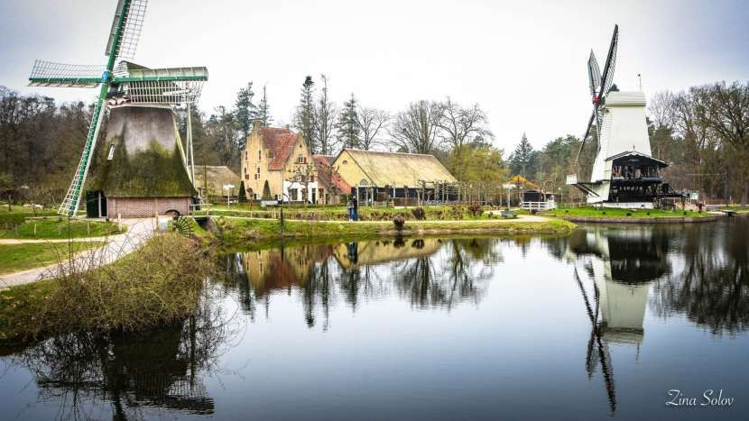
כמו תמיד, גם את חופשת הפסח החלטנו להעביר ביעד מעניין בחול. קשה לי נורא עם הצפיפות בארץ, המחירים המטורפים על כלום ושום דבר, ויחד עם חופש ארוך לילדים בלי מסגרת, טיול לחול מתבקש בהחלט.
לפני שאכתוב את סיכום הטיול, למי שלא מעוניין לקרוא את הכל, הנה סיכום קצר ותובנות-
טיסות- טסנו עם ריינאייר לבריסל שרלרואה, הטיסה דרך בלגיה הייתה משמעותית זולה יותר מאשר טיסה לאמסטרדם- להרכב שלנו, זוג הורים ושני ילדים בני חמש, היה הבדל של 1000 יורו בין טיסה לשרלרואה לבין אמסטרדם, בשביל סכום כזה היינו מוכנים לנהוג 3 שעות עד כפר הנופש. הטיסות הוזמנו בסוף חודש אוקטובר 22 והמחיר היה יחסית אטרקטיבי, מציעה לא לחכות לדקה ה-90 עם הזמנת הטיסה, נגמרו ימי הקורונה שאפשר היה להזמין ברגע האחרון ובזול.
הנסיעה משרלרואה לכפר הנופש דה אמהוף לא נוראית כלל, הכבישים מצויינים, מוארים, עם שפע תחנות רענון לעצירה, כך שהיא עוברת מהר מאוד.
לינה- אנחנו חובבי טבע, בדרך כלל מטיילים בקרוואן או שוכרים דירות, הפעם רצינו לנסות משהו שונה- כפר נופש. במערב אירופה פזורים המון כפרי נופש, כאשר יש 2 רשתות בולטות- לנדל וסנטר פארקס, כאמור יש עוד רשתות אך אלה המפורסמות יותר. הקונספט מאוד דומה בכולן- בקתות בטבע, פארק מים מושקע, ג'ימבורי ועוד אטרקציות לילדים בגילאים שונים, חלקן בחינם חלקן בתשלום.
בחרנו את כפר הנופש דה אמהוף של רשת סנטר פארקס בעיקר בגלל השיפוץ שהוא עבר ומיקומו המרכזי לאטרקציות שרצינו לבקר בהם, הוא נמצא 50 דקות נסיעה מאמסטרדם, ובערך 50 דקות נסיעה ממרבית האטרקציות של הולנד.
חשוב לי להדגיש שמדובר בכפר ולא מלון, ולכן הוא כולל רק שירותים בסיסיים ביותר. הזמנו בקתות פרימיום באיזור 5 שהיה קרוב לחניה ולבריכה, התניידנו בכפר ברגל. הבקתות היו נקיות, חדישות, מרווחות. מטבח מאובזר, מקלחת מצויינת, סלון חביב וטלויזיה. כל בקתה פונה לתעלה ששם שוחים להנאתם ברווזים. ידענו מראש שהבקתות לא מצויידות בהרבה דברים ולכן הבאנו מהבית כמה גלילי נייר טואלט, שקיות סוכר, תבלינים, טבליות למדיח. מה שהיה חסר מבחינת ציוד מטבח זה קולפן.
ברשת סנטר פארקס יש כמה סוגי בקתות שההבדל ביניהם הוא ברמת האבזור, למשל קומפורט לא כולל מצעים ולא מגבות, פרימיום כוללת מצעים אך לא מגבות, VIP כולל גם וגם ועוד תוספות, כמובן שכל זה גם מגולם במחיר בהקתה. אנחנו בחרנו בבקתת פרימיום, הצטיידנו במגבות ספורט מהארץ והסתדרנו לא רע.
מבחינת האטרקציות בכפר- יש שפע, אבל בודדות בחינם. בחינם תקבלו בריכה מדהימה עם שלל מגלשות שפתוחה עד תשע בערב, למעט שבת וראשון אז הבריכה נסגרת בשש בערב, לפחות כך היה בחודש אפריל. אני מניחה שיש זמנים שונים בהתאם לחודשי השנה. ישנו גם ג'ימבורי חביב, פינות משחקים הפזורות בכפר עצמו, תעלות מים עם ברווזים שוחים, פינת חי פצפונת, מרינה די פשוטה וזהו בעצם. היות והזמנו ישירות מאתר הסנטר פארקס, עוד בחודש נובמבר, קיבלנו ואוצ'רים בשווי 30 יורו- מה שהספיק למשחק באולינג אחד של שעה.
בנוסף עוד מהארץ שכרתי אופניים, לא זול בלשון המעטה, אבל הילדים נהנו לנסוע בכפר באופניים, קראתי שכדאי לשריין מראש אופניים אחרת נגמר, בפועל ממש לא צריך, אולי רק בחודשי הקיץ העמוסים.
בכפר יש גם מסעדות- ג'אנק פוד במיטבו בעלות מאוד לא זולה ביחס למסעדות בחוץ. היינו אוכלים ארוחת צהריים בחוץ וארוחת בוקר וערב מכינים לבד. סופרמרקט- משמעותית יקר יותר מכל סופר אחר, אבל מאוד נוח אם צריך להשלים משהו קטן ולא רוצים עכשיו לנסוע 20 דקות לסופר הקרוב.
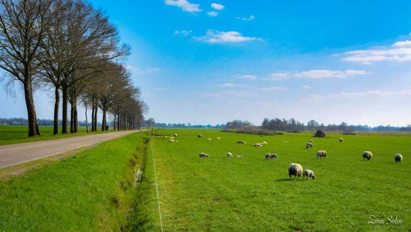
לסיכום החויה שלנו מהכפר- אנחנו פחות התחברנו לקונספט כפר הנופש. ידענו שהאטרקציות בכפר עולות כסף ולכן מראש לא תכננו עליהם, אבל אין ספק שמחירן מופקע ממש. מאוד הפריע לי שאין מקום נורמלי בכפר לאכול ארוחת צהריים, המסעדות היחידות שפתוחות בצהריים מגישות נאגטס, סנדוויצ'ים או פיצה זוועתית. המסעדות היותר טובות נפתחות רק מחמש אחהצ וצריך להזמין מקום מראש באפליקציה של סנטר פארקס, לא תמיד הסתדר לנו עם הלוז לדעת בבוקר מתי נרצה לאכול ארוחת ערב לכן מראש ויתרנו ולמעט ביום הראשון והאחרון שנשארנו בכפר, הכנו בעצמנו ארוחות ערב מעולות. הבקתות היו מעולות ונקיות אבל שוב זה לא מלון אל תצפו לרמת פינוק של 5 כוכבים זה לא. הבריכה מדהימה, כולנו נהננו מהמגלשות השונות שפזורות בה או סתם לשכשך במים, המקום והמים מחוממים כך אין דאגה, לא מרגישים לא את הקור ולא את הגשם. לדעתי, מי שמחפש להעסיק את הילדים באווירה כפרית יהנה מהכפר ומהפעילויות בו, לנו כאמור זה פחות התאים ולכן כנראה לא נחזור בקרוב על הקונספט הזה.
מסלול- אני ממליצה לא לבנות מסלול פר יום אלא יותר לבחור את המקומות שרוצים לבלות בהם ולתכנן לפי מזג האוויר. העוגן היחיד ששריינו היה האפטלינג שהסתדר לנו טוב עם הנסיעה חזרה לשרלרואה ביום האחרון. שימו לב גם במקומות מסויימים כדאי להזמין כרטיס כמה ימים מראש- כמו למוזיאון נמו, אפטלינג.
את היום הראשון והאחרון בכפר בילינו רק בכפר- בריכה, ג'ימבורי, אופניים, באולינג. בשאר הימים יצאנו לאטרקציה או שתיים ובסיומן לפעמים עוד ניצלנו את הבריכה של הכפר.
ואחרי שקראתם את הדברים החשובים, הנה סיכום מפורט של הטיול שלנו:
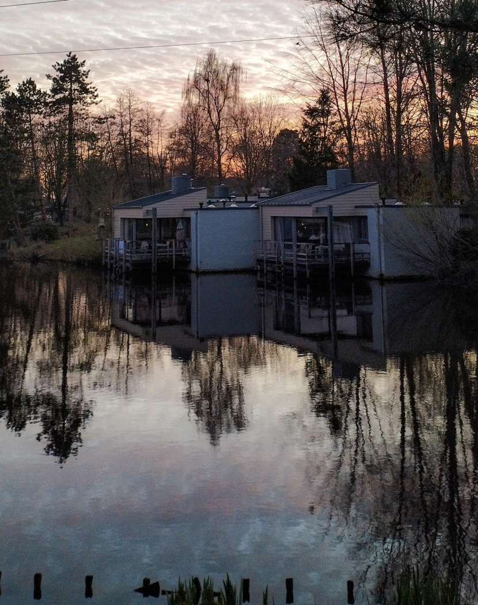
23\04\03- הדרך לבלגיה עוברת ברומא
טיסתנו אמורה להמריא בשעה אחת וארבעים בצהריים, הגענו לשדה, ההתרגשות בשיאה, צ'ק אין חלק יחסית, רק עיכוב של חצי שעה, עלינו למטוס רק כדי לגלות שיש תקלה טכנית שמנסים לתקן, כעבור חצי שעה בערך מורידים את כולם מהמטוס חזרה לטרמינל. אין עם מי לדבר, לא יודעים כלום, לא ברור בכלל אם נמריא היום.
אני מייד מתקשרת לבלגיה לסוכנות השכרת הרכב, שימו לב בשרלרואה סוכנויות הרכב נסגרות בשעה 23. כדי למנוע את אובדן הרכב שלנו אני מעדכנת אתם שיש עיכוב ולא ברור מתי ננחת, ייתכן ואפילו מחר. הרכב הוזמן דרך רנטלקרס מסיקסט, כמובן שאין מה לדבר עם רנטלקרס, את השיחה ביצעתי מול סיקסט שהיו ממש נחמדים, כמו כן הם עדכנו שתמורת תשלום של 65 יורו הם יכולים לחכות מעבר לשעות העבודה- נחזור לזה עוד מעט.
גם לכפר הנופש התקשרתי לעדכן שכנראה נגיע רק מחר, איך שהדברים נראים, אם ננחת בבלגיה היום זה יהיה נס.
מישהו שמע את תפילתנו, אולי כי רוב המטוס היו חרדים, אבל סוף סוף בשעה 6 וחצי בערב אנחנו עולים למטוס. אני מיד ניגשת לדיילת לברר צפי נחיתה כדי לדעת אם לבקש מחברת ההשכרה שיחכו לנו או לא, לפי חישוב שלי אנחנו מגיעים על הקשקש, ואז אני מגלה שאנחנו עוד עושים עצירה ברומא. מסתבר שהצוות חרג משעות הטיסה המותרות לו והדרך היחידה שלנו בעצם להמריא היום היא לעצור ברומא ולהחליף צוות. זה לא הפריע לדיילת להגיד שצפי נחיתה הוא 23, נראה לי היא קצת השלתה את עצמה. החלטנו לחכות לעצירה ברומא ואז להמשיך סבב טלפונים.
זו היתה הטיסה המהירה בהיסטוריה לרומא, תוך פחות מ-3 שעות נחתנו, כמובן אף אחד לא יצא מהמטוס, חיכינו שהצוות יעלה ושנקבל אישור המראה ליעד שלנו, מה שלקח עוד שעה וקצת. כמובן שבזמן הזה ניצלנו להתקשר לחברת ההשכרה ולבקש לחכות לנו, וכן להזמן לנו את החדרים האחרונים שהיו במלון ליד שדה התעופה, ברור לכולנו שלא נסע היום להולנד. אחרי הטיול כבר נתחשבן עם החברה על כל ההוצאות המיותרות האלה, למי שסקרן- אכן קיבלנו פיצוי.
נחתנו בשדה הפצפון שרלרואה בשתיים עשרה וחצי בלילה, עיכוב של למעלה מ-6 שעות. מהמטוס הולכים ברגל לטרמינל, אנחנו הטיסה האחרונה שנחתה ומרגיש כאילו חיכו רק לנו כדי לסגור את השדה ללילה. הילדודס גמורים, גם אנחנו. אספנו את המזוודות, לקחנו את הרכב ונסענו למלון שלנו- aero 44 שהיה מעולה, הגענו בשתיים בלילה, הפקיד החביב חיכה רק לנו, מסתבר שכל צוות המטוס לן במלון הזה אז הוא היה מעודכן בעיכוב. הזמנו גם ארוחת בוקר בעלות לא יקרה. שלוש לפנות בוקר, זו השעה שהלכנו לישון. לפחות הגענו לבלגיה.
23\04\04- יומולדת וכפר הנופש
היום יום ההולדת של בעלי, הספקנו לחגוג לו גם במטוס. התכנון היה לקום היום לקול הציפורים בכפר הנופש להתפנן לנו בכפר, אבל תכנונים לחוד ומציאות לחוד. קמנו בשמונה בבוקר, במלון בשדה התעופה שרלרואה, א. בוקר פשוטה במלון, הצוציקים גם ככה אוכלים קורנפלקס ואוויר… יצאנו לדרך לקראת עשר בבוקר, בלי עצירות כמעט, דוך לכפר, רצינו כבר להגיע ולהתחיל את החופשה.
כפי שציינתי מעלה, מדובר על נסיעה של כ-270 קמ, כ-3 שעות, הכבישים מצויינים והנסיעה עוברת חלק. עצרנו פעם אחת ממש סמוך לגבול הולנד להתרעננות והמשכנו הלאה. היום יום יפה, שמיים כחולים ובהירים ובכל מקום תחנות רוח, ובכך מסתכם הנוף של כל הטיול בהולנד: כביש, יער או מעט עצים, תעלת מים ותחנות רוח.
עד כדי כך רצינו להגיע שאפילו לא עצרנו, לא לצלם תחנות רוח- כשעוד התלהבנו מהן, ובטח לא בסופר להצטיידות. טוב נו, גם ככה יש סופר בכפר, אמנם יקר אבל הזמן שלנו גם יקר.
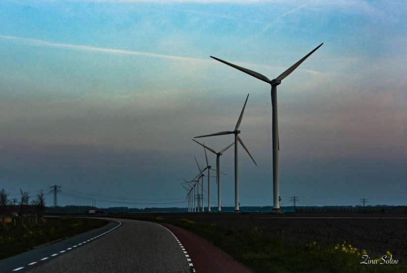
הגענו לכפר בשעה אחת בצהריים. ניתן להכנס עם הרכב לכפר לכאורה רק ביום ההגעה והעזיבה, בפועל אם הילדים נרדמים או אתם מבקשים יפה יפתחו לכם את המחסום מה שיצר תנועת רכבים מתמדת בכפר שאמור להיות שטח נקי מרכבים.
היינו 2 משפחות אז הזמנו 2 בקתות צמודות באיזור 5 שקרוב לחניה ולבריכה, האמת אחלה בקתות, חדישות נקיות מאובזרות- ממליצה לקרוא את הפיסקה מעלה בנושא הלינה בכדי לתאם ציפיות, זה המפתח לשביעות רצון או אכזבה מרה מהבקתה.
השעה שתיים, אנחנו גוועים ברעב, אבל הי, בכפר יש מסעדות לא? אז זהו שהטובות נפתחות בחמש ודורשות הזמנה מראש באפליקציה ומה שכן פתוח… נכונה לנו אכזבה. אכלנו במסעדת בית קפה במרכז הכפר ליד הבריכה, בתפריט פיצות, סנדוויצים וסלטים, הכל מזעזע, למעט הבירה, הדבר היחיד שהיה טעים. קפצנו לסופר ליד להצטיידות וכמובן שהזמנו מקום לא.ערב במסעדת הבשרים, יום הולדת לבעל בכל זאת…
משם שמנו פעמינו לבריכה, בריכה זה מילה פשוטה לתאר את זה, מדובר במעין פארק מים, שנראה כמו יער טרופי, חמים, נעים, כל חצי שעה בערך הבריכה הופכת לבריכת גלים, יש בריכת פעוטות עם מגלשה, מגלשות לגדולים יותר- גיל 4 ומעלה וגם 6 ומעלה יש בשפע, גם לגדולים- ניסינו את כולם, הילדים פשוט התמוגגו. בשבע בערב הצלחנו להוציא אותם מהבריכה לבקתה למקלחת ולא.הערב שהוזמנה לשמונה במסעדת פויוגו- מסעדת הבשרים שבכפר.
בדרך עצרנו לתצפית שקיעה חביבה על האגם שבכפר ומשם לאכול, אנחנו מורעבים. המסעדה היתה לא רעה, האוכל סבבה, העיצוב מרשים, אבל להציג מחירים בתפריט זה לא הצד החזק שלהם- הם יודעים שאתם קהל שבוי.
בעשר בלילה הילדים הלכו לישון, זו השעה שהם ילכו לישון כל יום בטיול הזה…
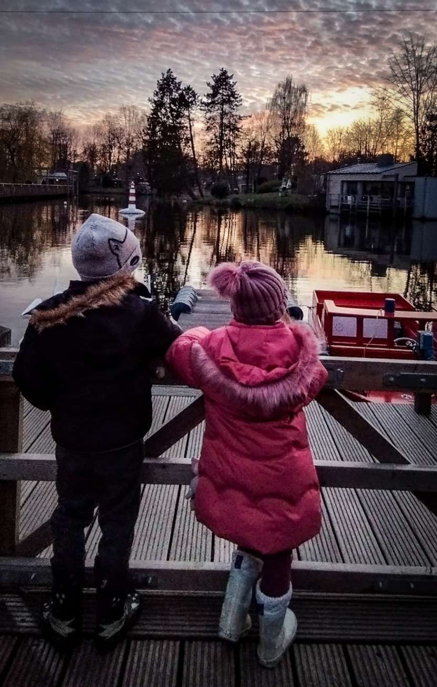
23\04\05-
נחים
ונהנים כמו באגדה
הצוציקים קמו בשמונה וחצי בבוקר, וואו זה לא קורה בארץ, כנראה התשנו אותם טוב טוב אתמול. אחרי חצי יום של רביצה בכפר היום יוצאים להתאוורר בחוץ, גם כי צריך להצטייד באוכל- הסופר פה בכפר ממש גזלן, וגם כי יום יפה בחוץ.
במקור הזמנתי להיום מקום במסעדת עמי ותמי המפורסמת, כיוונתי לשעה אחת כדי שישתלב לנו עם הצהריים, מה שלא השתלב לנו זו היקיצה המאוחרת שלא תכננתי, בבית הם קמים בשש.
בכל הפורומים קראתי שחייב להזמין מקום בעמי ותמי אז הזמנתי, ההרשמה לא עולה כסף ושריינתי שולחן בפנים למקרה שיהיה גשום- הולנד בכל זאת.
אחרי ארוחת בוקר תוצרת עצמית בחוץ מול התעלה עם הברווזים החלטנו שנתחיל את הבוקר בדולפינריום, גם ככה הוא קרוב לעמי ותמי ולא רחוק מהכפר ולא בא לנו לנסוע רחוק היום, אנחנו עוד עייפים מהטיסה והנסיעה.
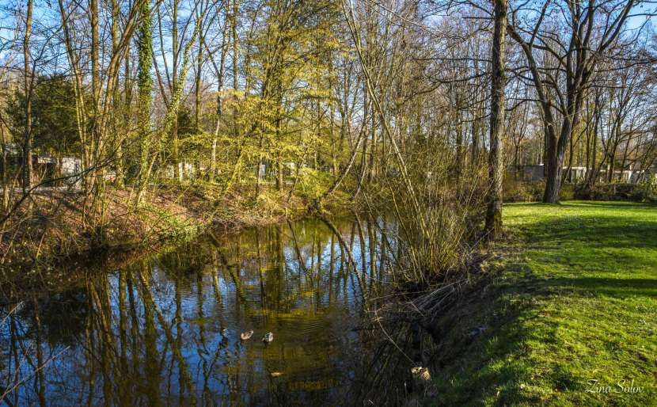
שימו לב שלדולפינריום כדאי להזמין כרטיסים אונליין, הבדל של 10 יורו לכרטיס. הכרטיסים באונליין גם לא זולים- 18 יורו.
נסיעה קצרה של חצי שעה והגענו לעיירה ולחניון, במקום יש כמה חניונים בתשלום כמובן אז אם כבר משלמים תחנו קרוב. חניה יומית 10 יורו, או שעתית שיוצאת יותר זול, לקחנו חניה לשעתיים בעלות של 4 יורו. ביום שהיינו המקום היה שומם, אפילו דוכני אוכל לא עבדו. השוס בעיני של המקום הוא ההאכלות- הכל כלכך מתוזמן שאתם מסיימים צפייה אחת ומיד עוברים לאחרת, יש שם כלבי ים, אריות ים, דולפינים וכו. לצערי ההסבר בהולנדית, יש במקום גם גינת משחקים נחמדה לילדים. המופע של הדולפינים יפה אבל קצת מתיש. בגדול לא התלהבנו, אולי כי היה שומם, אולי כי הכל היה בהולנדית לנסות להסביר לילדים מבלי שאתה מבין זה מתיש. מה שכן, ראינו אריה ים ענקי שדיגמן לנו. שורה תחתונה המחיר לא מצדיק את המקום ובאמת אחרי שעתיים מיצינו. בדיעבד אני מצטערת שלא יצאנו לשוטט בעיירה, הרחוב של הדולפינריום נראה מקסים עם הבתים ההולנדיים ותעלות והסירות, אבל הילדים היו רעבים, ויש לנו הזמנה לעמי ותמי.
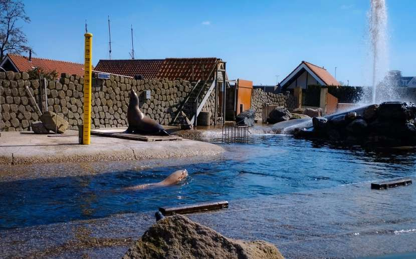 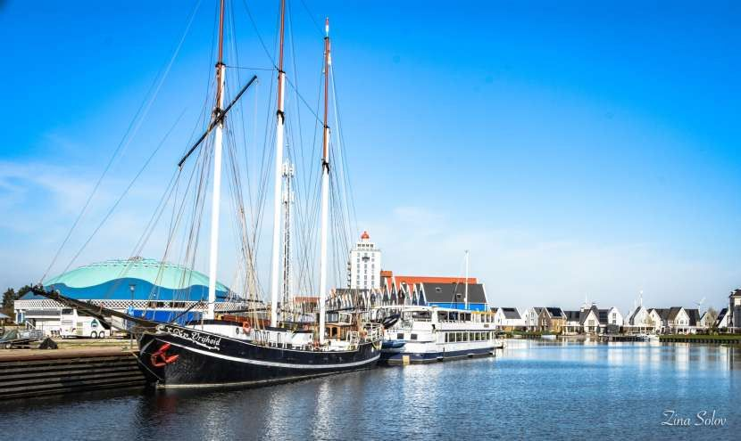
נסיעה של עשר דקות מהדולפינריום ואנחנו שם. רבות נכתב על המסעדה הזו- חוויה מטורפת לילדים, גינת משחקים ענקית וגם בעיקר שהאוכל יקר ולא טעים. לנו הייתה חוויה כלכך שונה. למרות שהזמנו מקום בפנים, לא הייתה שום בעיה לשבת בחוץ- יום שמש חמים וכיפי, בגלל שזה אמצע שבוע המסעדה לא הומה כלל. התיישבנו בשולחן בחוץ ושחררנו את הילדים לרוץ חופשי, ויש לאן לרוץ- בתי מכשפה עם מגלשות, אופניים במסלול מרוצים שמשפריץ מים, טרמפולינות, ארגזי חול, נדנדות, טרקטורים, ובפנים בכלל גן עדן- מהקצת שראינו נראה שנכנסנו לאגדה, טיפסנו למעלה והתגלשנו 3 קומות למטה לשירותים, ראינו מלא מייצגים, סוכריות בצורות שונות בקיצר לקחו את האגדה לרמה מעל ומעבר. ובזמן שהצוציקים משתוללים חופשי הזמנו ארוחת צהריים. שימו לב, זו מסעדת פנקייקים, זו לא מסעדת גורמה, היא על טהרת המתוק, לכן אנא הזמינו בהתאם למקום אחרת סתם תתאכזבו. כאמור עיקר התפריט זה פנקייקים, יש מתוקים ויש לא- בעלי הזמין פנקייק עם בשר אמר היה טעים, אני הזמנתי פנקייק עם ריבת תפוז ופירות יער, ואווו איזה טעים. גם הילדים קיבלו פנקייקים והפתעה- אף של מכשפה ומטבע בו יוכלו לקנות סוכריה בביתן הסוכריות.
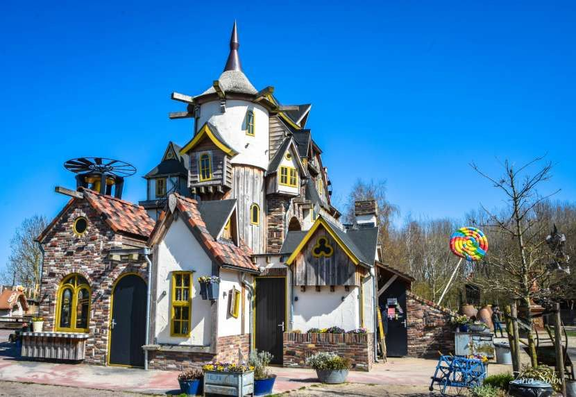 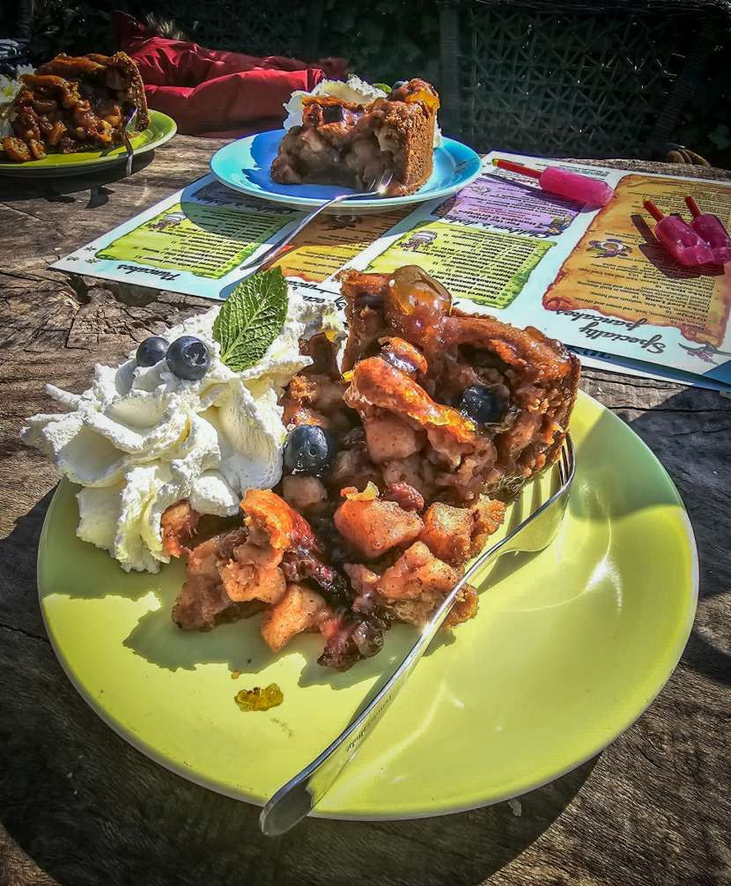
אם אתם לא חובבי פנקייקים עדיין תגיעו למסעדה ותזמינו את עוגת התפוחים של המקום- זה פשוט נפלא
איכשהו בילינו במקום 5 שעות. בשעה ארבע התקפלנו ונסענו לסופר הקרוב- רשת לידל להצטייד במזון וכל טוב לשבוע, משם לכפר.
אנחנו מפוצצים מהפנקייקים והטרור דורשים בריכה, אז הלכנו, הבריכה הרי פתוחה עד תשע בערב. העברנו שעה וחצי כיפית בבריכה בעיקר להתגלש במגלשת נהר הפרא. משם ארוחת ערב. ערב חג פסח היום, אנחנו כמה משפחות אז התארגנו על ארוחת פסח נחמדה, וכך גם היום הסתיים לקראת אחת עשרה בלילה.
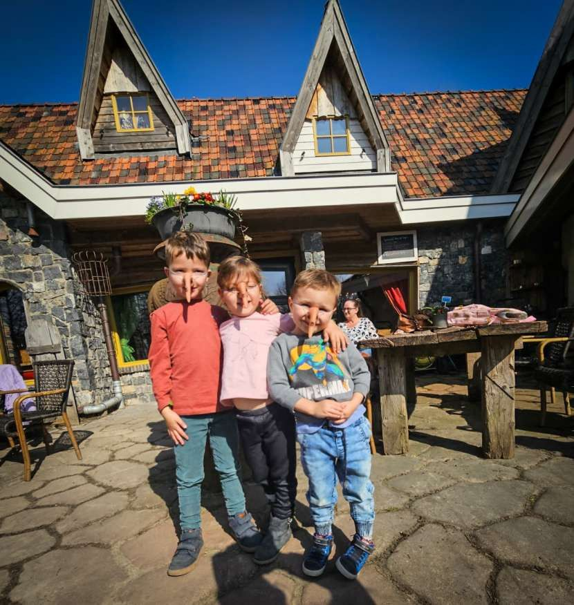
23\04\06- יום שלם במוזיאון, הפתוח.
עוד יום של קימה מאוחרת, אכלנו ארוחת בוקר בבקתה, הפעם בפנים כי קר בחוץ ומעונן. היום אנחנו נוסעים לארנהם שם נמצא המוזיאון הפתוח וגם גן החיות ברוגרס. שמורת הטבע הוחה ולואה נמצאת ליד אבל לשם לא תכננו להגיע- התמונות מהטבע במקום לא הלהיב אותנו לביקור.
נסיעה של כשעה מהכפר ואנחנו בארנהם. המוזיאון וגן החיות ממש סמוכים- רבע שעה הליכה ברגל מאחד לשני. אנחנו החלטנו להתחיל במוזיאון, הנחתי שנמצה אותו תוך שעתיים שלוש גג ונמשיך לגן החיות. ניתן לקנות במקום כרטיס משולב לגן החיות ולמוזיאון בעלות של 28 יורו וכן חניה בעלות של 7 יורו- שימו לב שהחניה היא עבור המקום כלומר אם תרצו לנסוע לגן החיות עם הרכב תצטרכו לשלם גם שם חניה בעלות דומה.
היום קריר וסגרירי ולפי התחזית אמור לרדת גשם אחר הצהריים. בעוד אנחנו עומדים בכניסה מישהו קורא בשמי, וכך פגשתי עוד משפחה מהישוב שלנו שמטיילים בהולנד וישנים בדה אמהוף, עכשיו אנחנו כבר 5 משפחות שנסעו לאותו מקום. אם לא כתבתי קודם, יצא שתכננו לטוס יחד עם בת דודה שלי ומשפחתה, ואז גילינו שעוד חברים מהישוב מגיעים באותם תאריכים לאותו הכפר, ואחרכך חבר של בעלי ומשפחתו גם הצטרפו, היה לנו שמח.
ובחזרה למוזיאון; המוזיאון לא גדול ניתן ללכת בין התחנות ברגל אבל למה? כשיש חשמלית מגניבה כמו של פעם שעוברת בין שש תחנות הפארק כל עשר דקות. הילדים כלכך התלהבו לנסוע בה בין התחנות. כאמור יש 6 תחנות בפארק- איזור הכניסה, משם תחנת רוח שניתן לעלות עליה, משם מעין חווה לילדים עם דגמים של פרות שניתן כביכול לחלוב אותן וסוסים וכל מיני משחקים, בהמשך עוד חווה לדוגמא, ואז עיר הולנדית לדוגמא. במקום יש מסעדה, מאפייה, גינת משחקים גדולה, מלא ביתנים שניתן לראות בהם איך טווים צמר, איך אורגים בדים, ביתן נפחיה, ביתן שמראה איך בונים סירות, ניתן אפילו לשוט בסירה קטנה בעזרת חבל.
אז חשבנו שנמצה תוך שעתיים, בפועל היינו במקום מאחת עשרה ויצאנו משם לקראת ארבע אחר הצהריים- כשהתחיל הגשם.
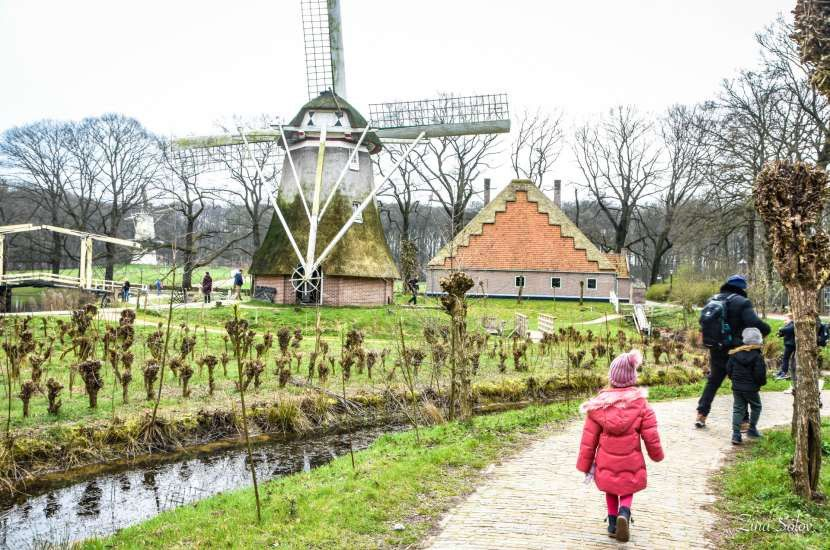 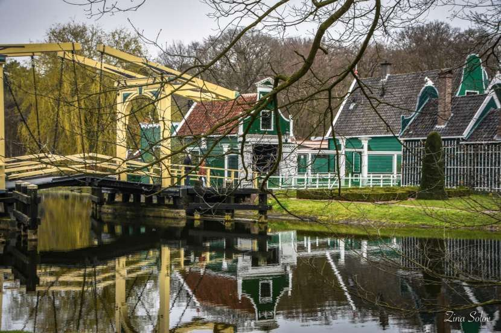 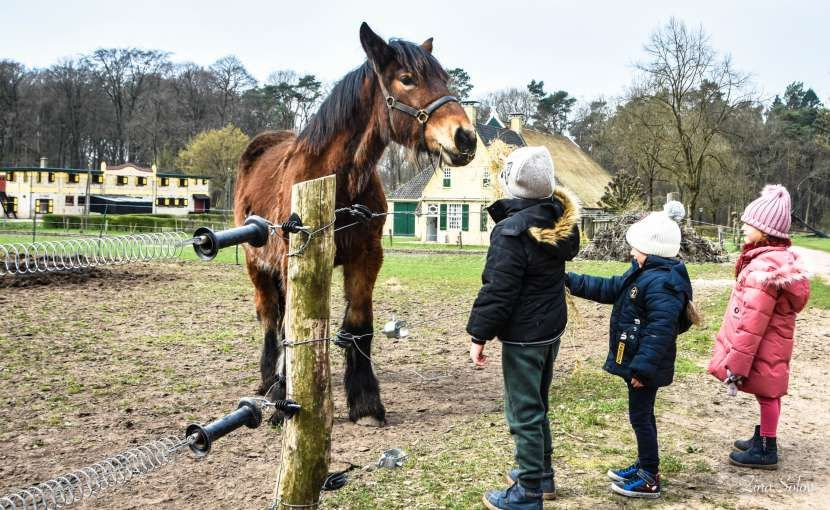 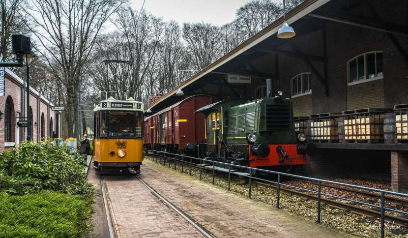
היינו כבר גמורים מעייפות אז לא היה מה לדבר על גן החיות היום, למזלנו ניתן לממש את הכרטיס המשולב עד 5 ימים אחרי קנייתו, החיסרון- עוד יום שצריך לנסוע לאותו מקום, נסיעה של שעה לכיוון. בדיעבד לא ממליצה לקנות את הכרטיס המשולב פשוט כדי לא להיתקע כמונו את היום הנוסף שהיינו חייבים לנצל בו את הכרטיס לגן החיות היינו יכולים לנסוע למקום אחר וחבל שכך יצא.
חזרנו לכפר בשעה שש בערב, הילדודס מבקשים בריכה, אז גם היום זרמנו, במיוחד שיורד גשם בחוץ זה ממש נחמד לבלות בג'ונגל הטרופי של הבריכה.
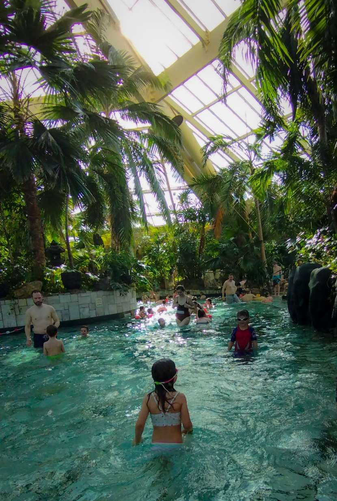
23\04\07- גן החיות
יום סגרירי וגשום, התלבטנו לאן לנסוע היום, חשבתי על אמסטרדם הרי גם ככה התכנון הוא לעשות פעילויות מקורות אז הגשם פחות מפריע, אולם בגלל שנורא רצינו לקחת את הילדים למוזיאון נמו והכרטיסים היחידים שהיו להיום היו רק לשתיים אחרהצ, מה שמאוד תקוע בלוז, החלטנו לדחות את אמסטרדם למחר, לכן מראש כבר היום הזמנו כרטיסים למוזיאון נמו ל-11 בבוקר וכן לחניון ה-Oosterdoksstraat שנמצא סמוך לתחנה המרכזית ובעצם קרוב להכל אבל על אמסטרדם נפרט מחר.
אחרי השקמה מאוחרת של הצוציקים החלטנו לקחת את הבוקר באיזי ולנוח טיפה בכפר. לאחר ארוחת בוקר תוצרת עצמית הלכנו לטייל במרינה של כפר הנופש, בדרך עברנו בחווה של הכפר- יותר כמו פינת ליטוף, די קטנה עם שלושה חזירים ושני חמורים וכמה עיזים. חמש דקות והילדים מיצו. משם המשכנו לג'ימבורי, הבנים נשארו לשתות קפה ולהשגיח על הטרור בזמן שאנחנו הבנות הלכנו לבדוק את המרינה.
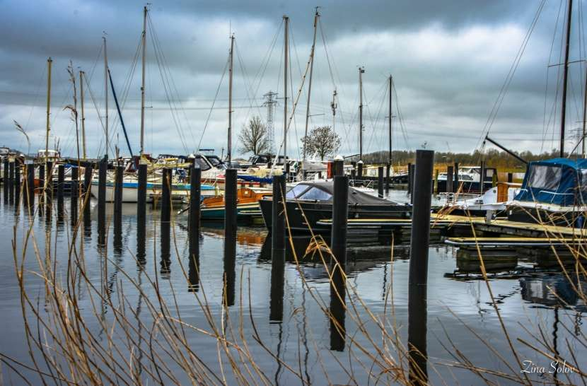
בכפר הנופש יש דירות במתחם המרינה, נראה לא רע אם כי די רחוק מהבריכה. הנוף גם לא כזה משהו- כמה יאכטות, חוף ים שאולי יותר מזמין בקיץ- עכשיו פחות. ברקע רואים עיירה סמוכה ולדעתי ניתן לשוט לשם במעבורת מהכפר, במקום יש גם חניון קראוונים. אחרי סשן צילומים קצר הצטרפנו לבנים בג'ימבורי.
הג'ימבורי נמצא במתחם המשחקים של הכפר, מדובר במבנה גדול שיש שם שם משחקי וידאו- בתשלום נוסף, באולינג- בתשלום, אסקייפ- בתשלום וכו וכו. מה שחינם זה הג'ימבורי שהוא אחלה רק שהטרור שלנו מיצה אותו אחרי חצי שעה.
ישבנו שם קצת והבנו שזה לא כזה כיף לנו אז לקראת 12 יצאנו לכיוון גן החיות בורגרס- מה שלא הספקנו אתמול.
פקקים מטורפים בכבישים- כולם בטח מתוכננים לפסחא שתהיה מחר, לקח לנו כמעט שעתיים להגיע לארנהם.
גן החיות פתוח כל יום מתשע בבוקר ועד 18 בערב, כאמור כרטיסים כבר רכשנו אתמול בשילוב עם הכרטיס של המוזיאון הפתוח. חניה עלתה לנו כ-10 יורו בנוסף. בשעה שתיים כשהגענו היה די קשה למצוא חניה קרוב, אז חנינו בחלק היותר רחוק של החניון.
קראתי הרבה על גן החיות הזה שאמרו שהוא ענק ומושקע, גם חברים שלנו היו שם אתמול בזמן שאנחנו היינו במוזיאון הפתוח ובילו שם יום שלם ועדיין לא תיארתי לעצמי כמה הוא גדול ומושקע.
גן החיות מחולק ל-6 אזורים- טרופי או בשם מקומי the bush, מדבר, ספארי, פרפרים, נמרים ואוקיינוס. עברנו את כולם! היופי בגן החיות הוא שניתן לגמרי לטייל בגשם, יש המון מקומות מקורים ואפילו חמים- תזהרו בכניסה לבוש, חום אימים שם וכל העדשות מתכסות מיד באדים. גם במתחם הפרפרים נכנסים למבנה ואתם בג'ונגל טרופי כששפע פרפרים ענקיים בצבעים שונים מתעופפים סביבכם, הם עפים מהר ולצערי לא הצלחתי לצלם הרבה מהם, זה היה מרוץ אבוד בין הפרפר לאדים על העדשה. צהריים אכלנו באחת המסעדות בגן, אוכל לא רע בשירות עצמי. במקום יש גם משחקיה שכמובן העסיקה יפה את הטרור.
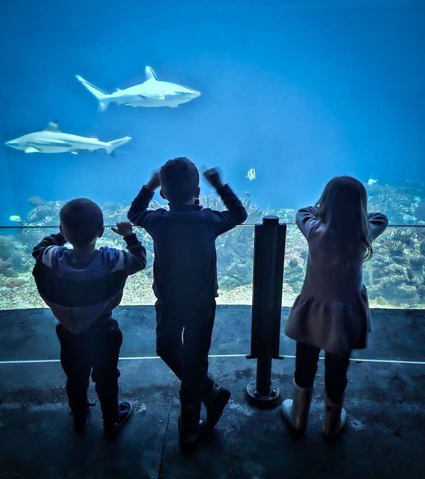 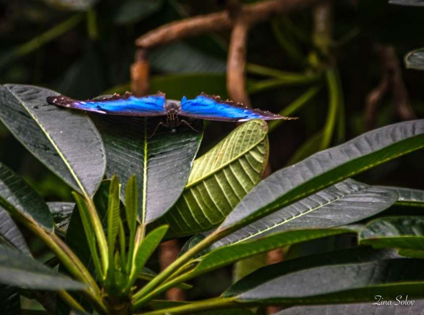 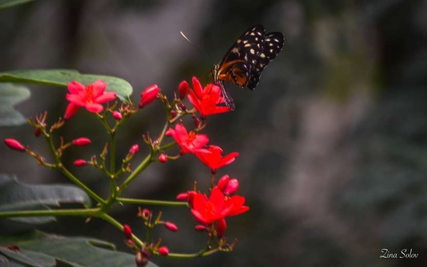 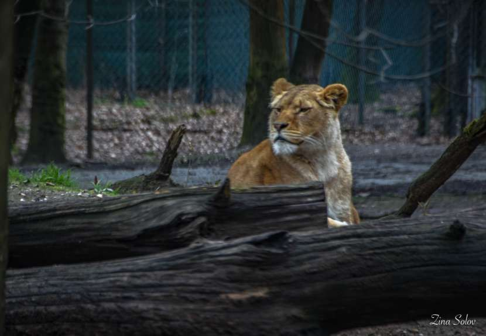
לקראת ארבע הרגשנו בהקלה בכמות האנשים, המשכנו לאושיאנה ולספארי, בכל מקום העיצוב מושקע ומרשים, ראינו המון חיות. בגדול המקום ממש מומלץ, בדיעבד לאור כמות הימים המצומצמת שלנו הייתי מוותרת על גן החיות ונוסעת דווקא למקום אחר- אולי מוזיאון הרכבות ומטיילת קצת באוטרכט מה שלא הספקנו לצערי, פשוט כי לא באנו להולנד לראות גני חיות. מצד שני הזוג שהיה איתנו דווקא מאוד נהנו מגן החיות ולא היו מפספסים אותו ככה שעל טעם ועל ריח.
יצאנו משם לקראת השעה שש עם הסגירה- כבר חשבתי שנלך לישון עם האריות בספארי. הילדים היו גמורים, עוד עצירה קצרצרה בסופר להשלמות מצריכים ולכפר. היום כבר אין בריכה, אנחנו פשוט עייפים מידי, שוב ארוחת ערב מאוחרת ולישון.
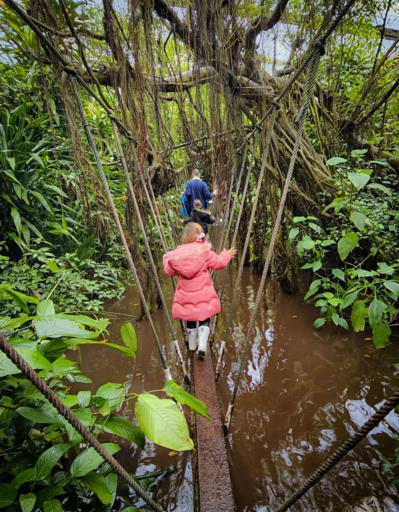
23\04\08- או אמסטרדם
יום שמש היום, איזה כיף. היום אנחנו נוסעים לאמסטרדם. כבר היינו פעמיים בעיר ,לפני הילדים, ואנחנו מאוד אוהבים אותה, היא עיר כיפית קלילה הכל קרוב ויפה, אבל עם ילדים לדעתי היא פחות מומלצת. בגלל שלא חיפשנו לראות את אמסטרדם, רצינו דווקא לקחת את הילדים למקומות היותר מתאימים להם בעיר ולכן תכננו את מוזיאון המדע נמו, בפעם הקודמת היינו שם כ-5 שעות ונשבענו שניקח לשם את הילדים. כאמור עוד אתמול הזמנו כרטיסים לשעה 11 בבוקר. קמנו מוקדם, בכדי שנגיע בזמן, הנסיעה לאמסטרדם מכפר הנופש היא כחמישים דקות בערך, עם פקקון קטן בכניסה לעיר.
למי שמגיע לאמסטרדם עם רכב כדאי לחנות בחניונים ברחבי העיר, יש די הרבה, חניוני P&R כלומר חנה וסע, אלה חניונים שפוזרים בפאתי העיר שם מחנים את הרכב בעלות נמוכה ולוקחים תחבורה ציבורית למרכז העיר. למי שלא רוצה, יש גם חניונים במרכז העיר, הם יקרים יותר כ-25-30 יורו לחניה ליום שלם אבל הם קרובים למרכז.
בחרנו לחנות בחניון Oosterdoksstraat, חניון בעלות של 25 יורו אבל נמצא ממש צמוד לתחנה המרכזית וממש קרוב למוזיאון נמו. יציאה נוחה מהחניון ישר ליד המוזיאון וכאמור ב-11 נכנסנו פנימה. לצערי יצא שבחרנו יום בו היה עומס קיצוני של תיירים באמסטרדם, פסחא, וגם יום שמש. המוזיאון היה מאוד צפוף מאוד ולצערי והילדים לא מיצו את הפוטנציאל של המקום בעיקר בגלל חוסר סבלנות לחכות בתור ליד כל מייצג, מעניין ככל שיהיה. הקומה האחרונה של המוזיאון היא מסעדה ותצפית יפה על העיר, שם ישבנו עם עוד שפע תיירים וספגנו קרני שמש ישירה.
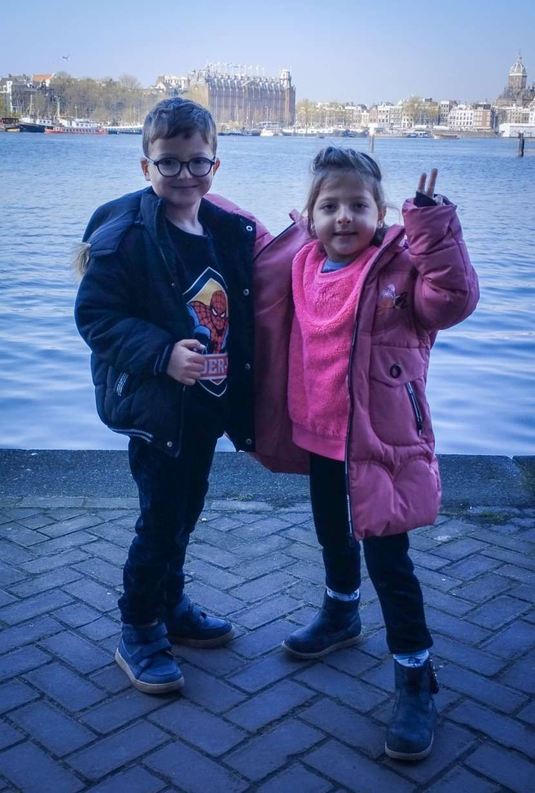
משם המשכנו לחלק הכי מתוייר- שייט לאורך התעלות, וכאן נכונה לנו הפתעה בדמות תורים מטורפים! כאמור זו הפעם ה-3 שלנו בעיר ובחיים לא ראינו כאלה תורים לעלות על סירת שייט תעלות. עלות השיט היא 14 יורו לשייט של שעה, לא זול אבל דווקא עם הילדים זה נחמד, מעביר להם את הזמן בנחת, מה גם שהיינו 4 משפחות אז בכלל הרגיש כמו גנון.
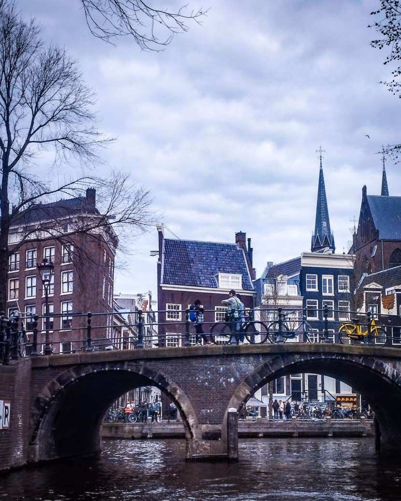
בתום השייט התפצלנו, אנחנו המשכנו משם ל-this is holland, מדובר באטרקציה יקרה אבל ממש ממש שווה, זה מעין טיסה מעל המדינה ב-5D, באמת חוויה. עשינו את זה בטיול באיסלנד עם הילדים והיה אדיר אז בטח שנעשה גם בהולנד.
הליכה לא ארוכה של 20 דקות מהמרכז לכיוון התחנה המרכזית ומשם לוקחים מעבורת חינמית לגדה השניה, שם אגב, אף פעם לא היינו. נכנסנו בדיוק בזמן להצגה שלנו, מדובר בחוויה של שעה לכל היותר. בהתחלה יש מייצג יפה שמסביר על הולנד שהיה מאוד ויזואלי ומלמד, משם עוד חלק חביב על המדינה ובסוף גולת הכותרת- הטיסה. חוויה מדהימה לכולם- גם ההורים וגם הילדים, אין מה להשוות עם הנופים של איסלנד אבל כל מדינה עושה לימונדה מהלימונים שלה.
יצאנו משם בשש בערב, הילדים כבר עייפים ורעבים, התלבטנו אם לחזור למרכז העיר ולאכול, מצד שני מדובר בהליכה של עשרים דקות ומעלה ומשם עוד 20 דקות עד החניה, ואז צצה לי הברקה, הרי היה נורא חסר לי כפר דייגים אז למה שלא ניסע לוולנדם, כפר דייגים קטן במחקר 20 דקות נסיעה מאמסטרדם- בחישוב זמנים יוצא אותו דבר כמו לחזור ברגל למרכז העיר ומשם לחניה אז כמובן שמיד זרמנו.
להגיע לוולנדם בשבע וחצי בערב זה להגיע לעיירת רפאים, כל גדודי התיירים כבר לא פה, הטיילת היפה ריקה כמעט, נוף משגע, רק חבל שהשמש מתחילה לשקוע.
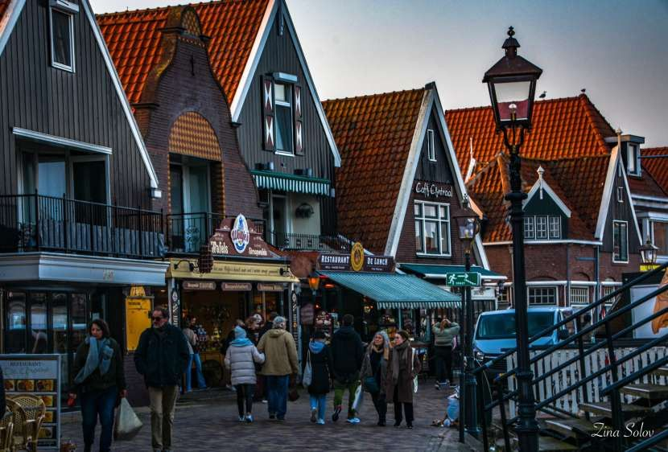
נכנסנו למסעדה- Restaurant Cafe de Dijk, חייבת להגיד שזו אחת הטובות שאכלנו בהן, מנות הפתיחה היו מעולות, מרק העגבניות להיט והלזניה ממש ללקק את האצבעות. גם פיצקה שחיה על אוויר בדרך כלל נהנתה מהמרק.
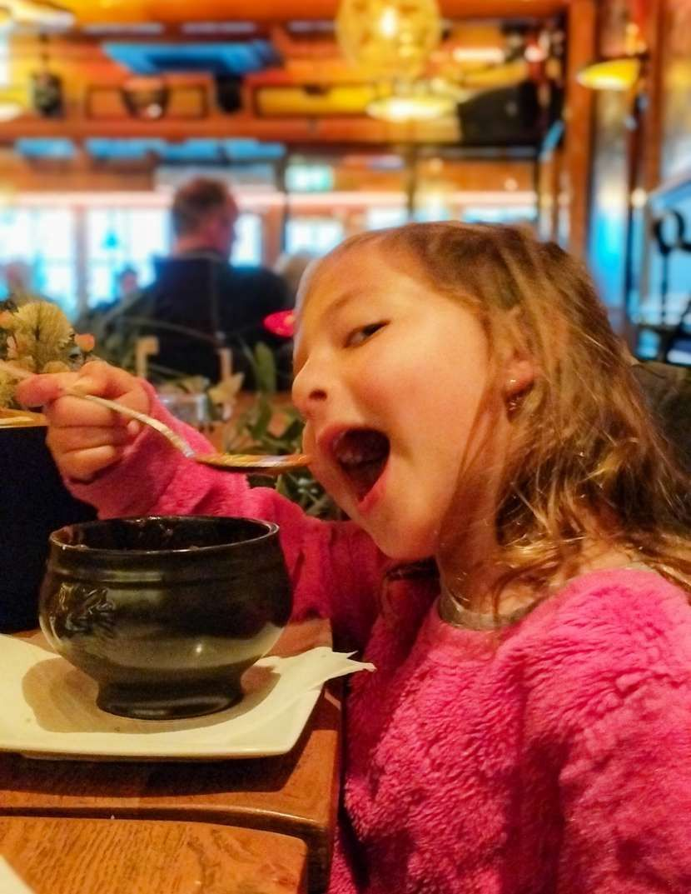 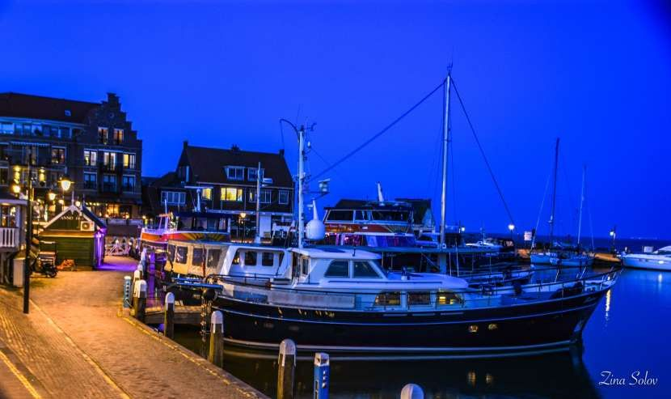
שבעים יצאנו לטייל בטיילת, השמש כבר שקעה וזו היתה חוויה נחמדה לראות את הטיילת המפורסמת גם בחושך.
לכפר הגענו באחת עשרה בלילה, הילדים הועברו ישנים מהרכב למיטה. עוד יום מוצלח הגיע לסיומו.
23\04\09- שוטי שוטי סירתי
עוד יום שמש מקדם את פנינו, היום אנחנו נוסעים לחיטהורן, מדובר בעיירה קטנה כשעה וחצי מהכפר שמפורסמת בזכות התעלות שלה, יש האומרים כמו ונציה של הולנד (תיאור טיפה מוגזם לטעמי, אבל צריך איזה גימיק למשוך תיירים לא?). זו אחת האטרקציות שאמרתי שלא מפספסים ויהי מה. ממליצה לנסוע ביום שמשי ויפה, חוויה מדהימה.
גם היום יצאנו מוקדם, בכל זאת נסיעה של שעה ורבע מהכפר, הדרכים ריקות לחלוטין, אולי כי יום ראשון היום. בשלב מסוים נכנסנו לכפרים של הולנד, ואו סוף סוף נוף שכיף לראות, דשא ירוק, בתים הולנדיים מהממים עם סחלבים בכל חלון, תעלות מים ציוריות, פשוט גלויה. בכפר חנינו ליד תחנת הקמח ההרוסה ולא בחניון המרכזי כך יצא ששוטטנו ברגל לאורך גדת התעלה- והרחוב הראשי של הכפר. מסביב בתים מצוירים, תעלה מרכזית בה שטות סירות התיירים ומלא מסעדות. תוך כדי הליכה אני לא מפסיקה לצלם, והילדים לא מספיקים לנדנד מתי נעלה על סירה.
לא חסר מקומות להשכיר סירה, אל תשכירו מהמקום הראשון שאתם רואים, אבל הרוב די אותו דבר. בסוף שכרנו סירה בעלות של 70 יורו לשעתיים, זה המחיר פחות או יותר, מקבלים מפה ובהצלחה, רק להיזהר עם הראש כשחוצים את הגשרים כדי לא לקבל זבנג.
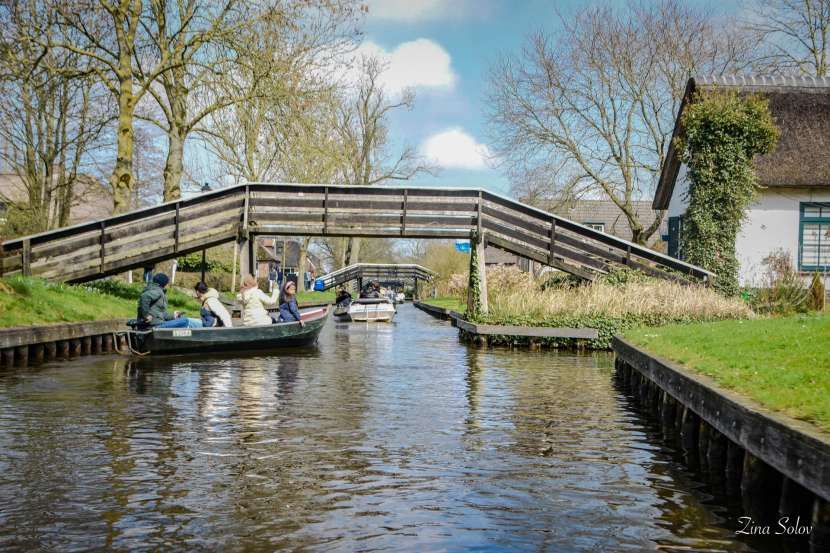 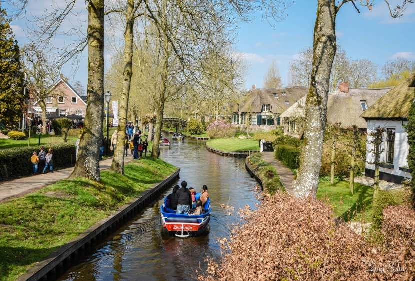
יצאנו לתעלה המרכזית והופ אנחנו בפקק, יש סירת אוטובוס למי שלא רוצה להשיט לבד, יש סירות קטנות יותר, וכולם שטים באותו כיוון לאורך התעלה ועד לאגם. הכל היה זורם יותר טוב אם הסירה הזו היתה מגיבה להגה, אבל לוקח כמה שניות מסיבוב של ההגה ועד שיש תזוזה של הסירה, מה שגרם לנו להתנגש בגדות התעלה או להסתובב סביב ולהחמיר את הפקק, אבל הי, זה חלק מהכיף. עגנו ליד אחת המסעדות וקנינו בירה להנעים לנו את הטיול. תביאו גם לחם לברווזים שנוטים לנחות ישר בתוך הסירה ולבקש יפה…
ליד תחנת הקמח, איפה שחנינו עם הרכב, פונים ימינה ויוצאים לאגם שהוא שמורת טבע, שטנו באגם, הילדים גם ניסו להשיט ובגדול היה כלכך כיף ונעים שהשעתיים עברו ממש מהר.
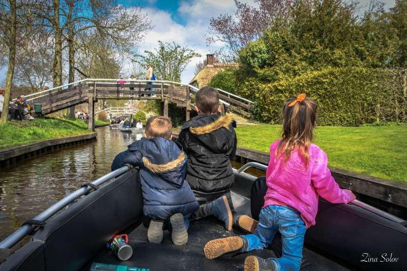 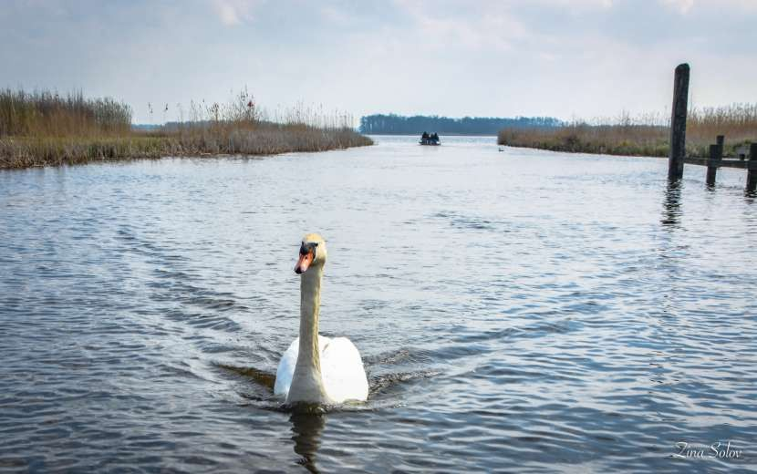 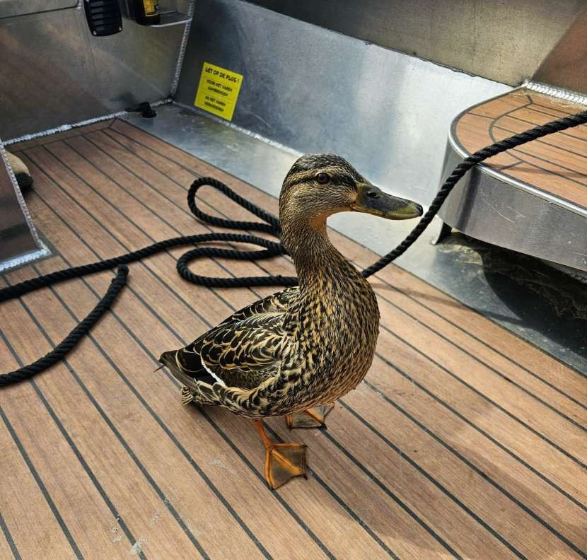
ושוב נכנסנו לפקק התעלה עד שהחזרנו את הסירה, אם אתם באים בקיץ באמת באמת תבואו מוקדם או מאוחר אחרת זה לא יהיה שייט אלא פקק אחד גדול.
אחרי שהחזרנו את הסירה הלכנו לחפש מקום לאכול ומצאנו מסעדת המבורגרים ממש נחמדה- Café Restaurant De Rietstulp, התיישבנו בחוץ להתחרדן בשמש, ההמבורגרים היו מעולים, הילדים מצאו לעצמם שולחן פיקניק קטן בחוץ והעבירו את עצמם לאכול שם.
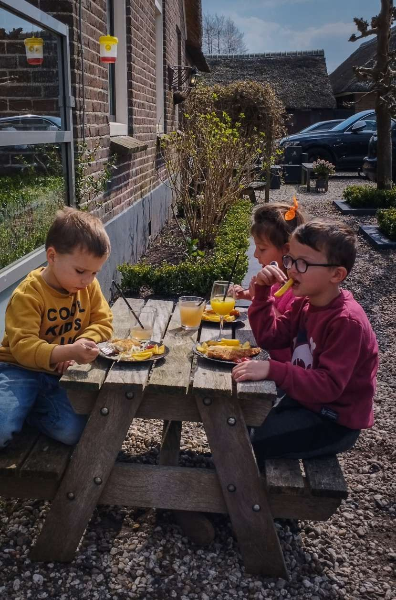
ככה בלי לשים לב השעה כבר היתה ארבע אחהצ. לא רצינו לחזור לכפר כי הבריכה נסגרת בשש ולא נספיק, אז החלטנו לחזור למקום עם עוגת התפוחים הכי טעימה- עמי ותמי. הזמנו מקום בחוץ לשעה שש, היום פסחא אז המקום היה עמוס, בכניסה בדקו את ההזמנה שלנו והפנו אותנו לאזור הכחול- מסתבר שיש סימונים ואיזורים, מה שלא היה כלל כשהיינו שם בתחילת השבוע. התיישבנו, מיד הזמנו את עוגת התפוחים וקפה, הילדים רצו חופשיים, ושוב מצאנו את עצמנו מבלים שם עד הסגירה בשמונה בערב. ארוחת ערב זריזה תוצרת עצמית בכפר ועוד יום מוצלח הסתיים.
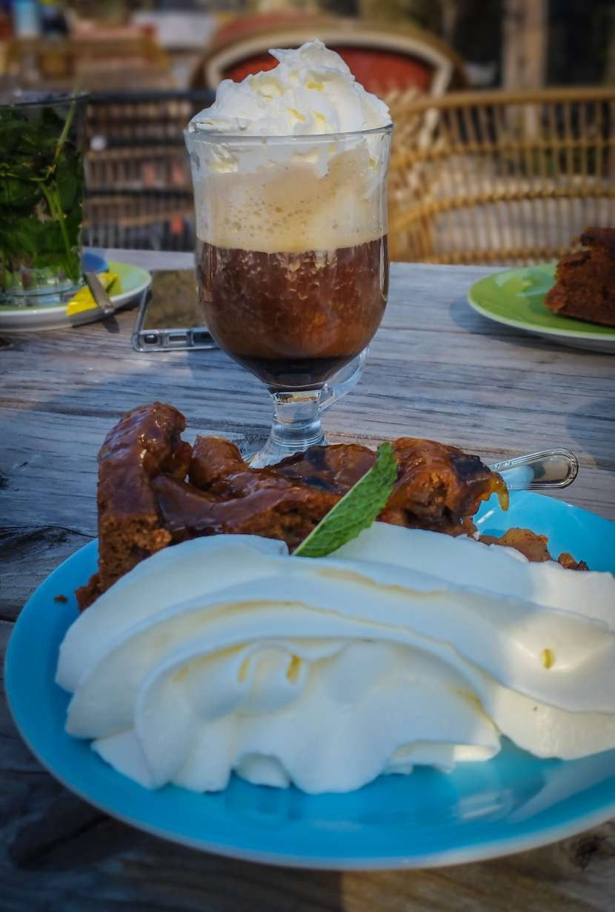
23\04\10- מנוחה בכפר
היום הוא היום האחרון שלנו בכפר, מחר עוזבים, לכן החלטנו להישאר ולהנות ממה שיש לכפר להציע לנו.
עוד מהארץ הזמנתי ארוחת בוקר ליום אחד, הרי חשבנו שנגיע בלילה ב-3 לאפריל וכך תהיה לנו ארוחת בוקר למחרת, בפועל הרי הגענו בצהריים ב-4 לאפריל כך שלא יצא לנו לנצל את ארוחת הבוקר עד עכשיו. סהכ מדובר בבופה נחמד, מאוד ידידותי לילדים, כמו כל דבר בערך בכפר, אבל לא שיא הקולינריה.
משם הלכנו להשכיר אופניים שגם אותם הזמנתי מראש. בדיעבד כל ההזמנות מראש היו מאוד מיותרות, אולי בשיא העונה יש צורך אבל עכשיו סתם נתקענו עם ההזמנות האלה. הזמנו גם באולינג לערב, קיבלנו 3 ואוצ'רים בשווי 10 יורו כל אחד, שזה הספיק בדיוק לשריין משחק באולינג. אז מה עשינו היום? האמת, לא הרבה. הילדים והבעל נסעו לטייל במרינה, אני הלכתי לשם ברגל, שוטטנו שם קצת ואז הם נסעו לסיבוב אופניים של 2 קמ, הילדה חזרה גמורה מעייפות.
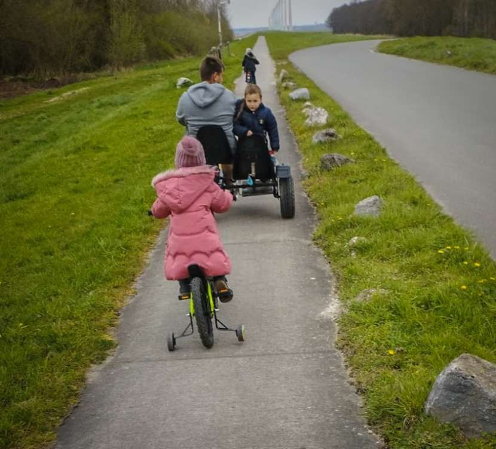 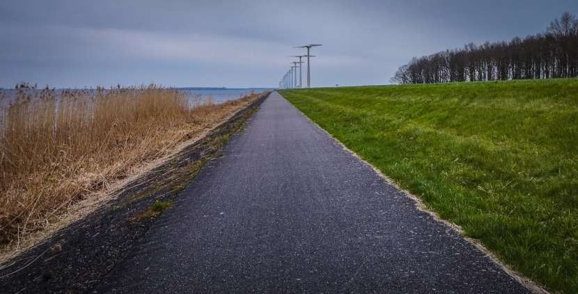 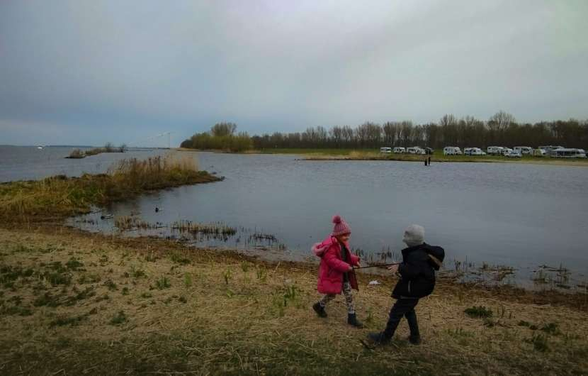
משם עצרנו שוב בג'ימבורי לקפה, במזג אוויר סגרירי כמו שהיה היום קפה ושוקו חם לקטנים זה MUST.
אחרי שהם מיצו את הג'ימבורי הלכנו לבריכה, הבריכה אף פעם לא מאכזבת, האכזבה היחידה זה שאין איפה לאכול צהריים- חוץ מנאגטס וכריכים שבכלל לא נראים מזמינים.
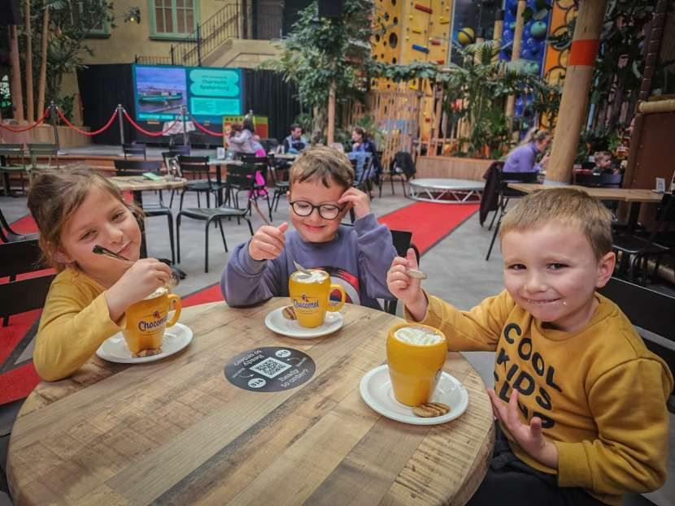
אחרי בילוי ארוך בבריכה הלכנו לחדר לנוח קצת, משם לבאולינג ולארוחת ערב במסעדה איטלקית נחמדה בכפר- שגם הוזמנה בבוקר.
זהו, מקלחות אריזות ולישון. מחר יום אחרון לטיול.
23\04\11- אפטלינג
קמנו מוקדם, עשינו ארוחת בוקר שאריות, צ'ק אאוט וקדימה לדרך. זה היום האחרון שלנו בטיול, מחר בשבע בבוקר טסים ארצה ויש לנו עוד נסיעה לבלגיה.
הביקור באפטלינג מסתדר לנו בול עם המסלול, גם ככה צריך לנסוע דרומה לבלגיה. כרטיסים לאפטלינג הזמנו עוד מהארץ, לא זול 42 יורו לכרטיס ועוד 10 יורו חניה.
יום שמש יפה היום, מה שכנראה הוציא את כל ההולנדים\גרמנים\בלגים ותיירים לאפטלינג היום. המשפחות שיצאו עוד יותר מוקדם מאיתנו נסעו לשם כשעתיים, שעה מתוך זה בפקק. אנחנו התעכבנו בסופר ועצירות פיפי כך יצא שהגענו ב-11 כשהפתיחה היתה בעשר, הפקק היחיד שחווינו היה בכניסה לפארק, פקק מטורף, לא היה להם מספיק מקומות חניה אז עד שכיוונו את מאות הרכבים לחניות לקח כשעה, בסוף יצא טוב כי חנינו בחנית נכים שהוסבה לחניון רגיל ממש ליד הכניסה (אחרי שהקפנו בפקק את כל חניוני הפארק).
כדאי מאוד להוריד את האפליקציה של הפארק שמראה בזמן אמת את עמוס התורים, פחות מ-45 דקות תור למתקן לא היה! החלטנו להתחיל בחלק של היער הקסום, מייצגים יפיפיים מתוך האגדות, אמנם בהולנדית אבל מאוד יפים.
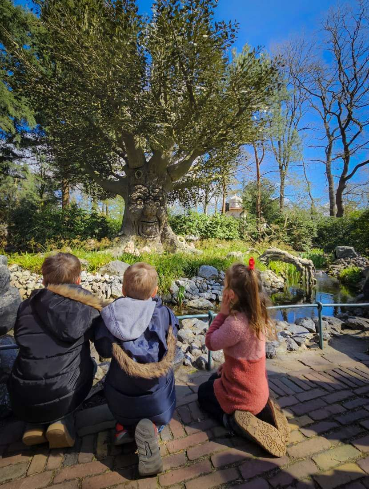
משם המשכנו לכיון המתקן הראשון- חלזונות עפים, תור של 40 דקות שדווקא לא היה נורא כי סביב המתחם היה מלא מתקני שעשועים לילדים שהעביר להם את הזמן. משם עצרנו לאכול.
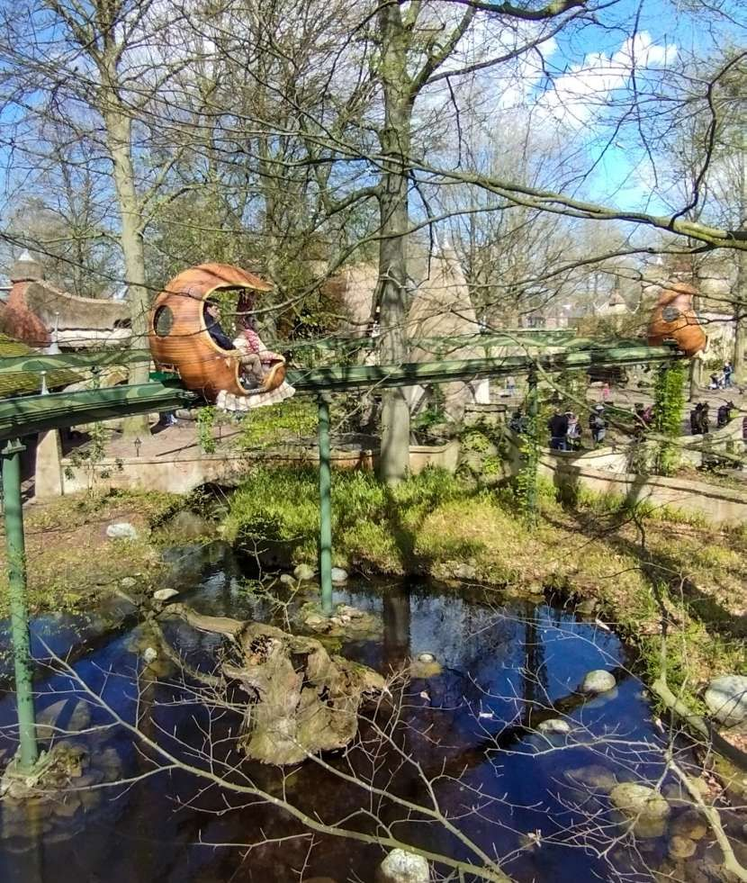
בגלל תקלה בשירותים המרכזיים היו תורי ענק בשירותים בכל מסעדה כמעט, אז אחרי עוד עמידה בתור של חצי שעה לפיפי המשכנו הלאה לבית המטורף שהיה מדהים, אם כי הפתיח בהולנדית היה נוראי וארוך, אחרכך עלינו לרכבת, משם לקרוסלות ולמתן הפגודה, לקראת ארבע חמש היתה הקלה בתורים כך שלשייט חיכינו רק 10 דקות.
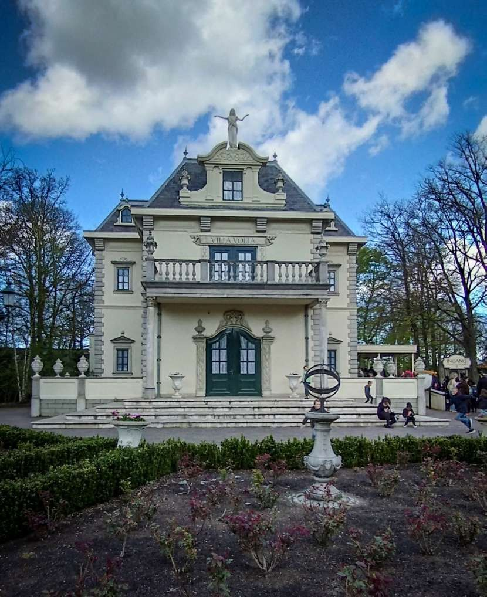 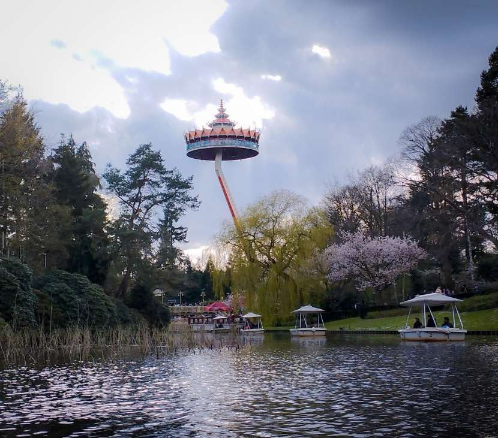
אחרי השייט כבר התחלנו להתקדם ליציאה, עצרנו למזכרות ולנשנש נקניקיה. בגלל העומס הקיצוני השאירו את הפארק פתוח עד שמונה בערב, אם לא היינו צריכים לקום באמצע הלילה היינו נשארים ואולי מספיקים עוד כמה מתקנים, אבל יש לנו עוד נסיעה של שעתיים ליעד. וגם ככה מצאנו את עצמנו רק בשמונה בערב ברכב מוכנים לנסיעה. הילדים נהנו בטירוף למרות התורים,הפארק מהמם וממש חבל שיצא לנו להגיע ביום כזה עמוס (אגב זה לא היה חג כי פסחא נגמר, כנראה כולם היו גאונים כמונו והזמינו ליום הראשון אחרי הפסחא).
הנסיעה חזרה לשרלרואה עברה חלק, שעתיים בכביש מהיר ומצויין. הזמנו מלון 5 דקות מהשדה- DC hotel and restaurant, היה אחלה חדר משפחה.
קמנו ב-3 בלילה לשדה, הטיסה יצאה בשבע בבוקר בול בזמן וכך נגמר הטיול.
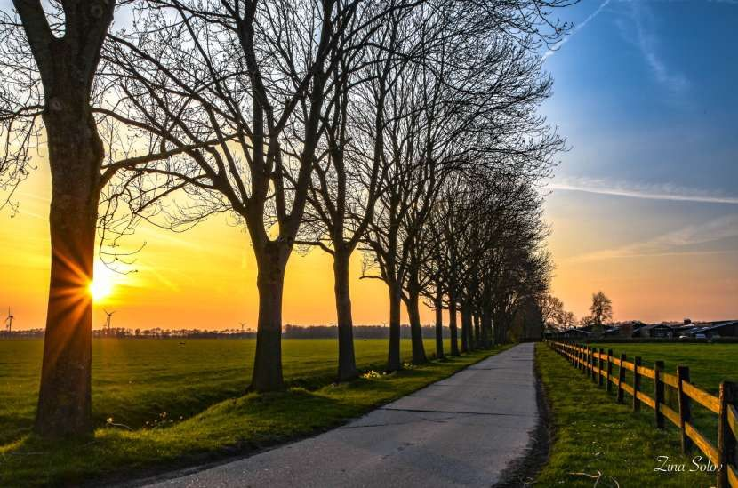
תודה שקראתם